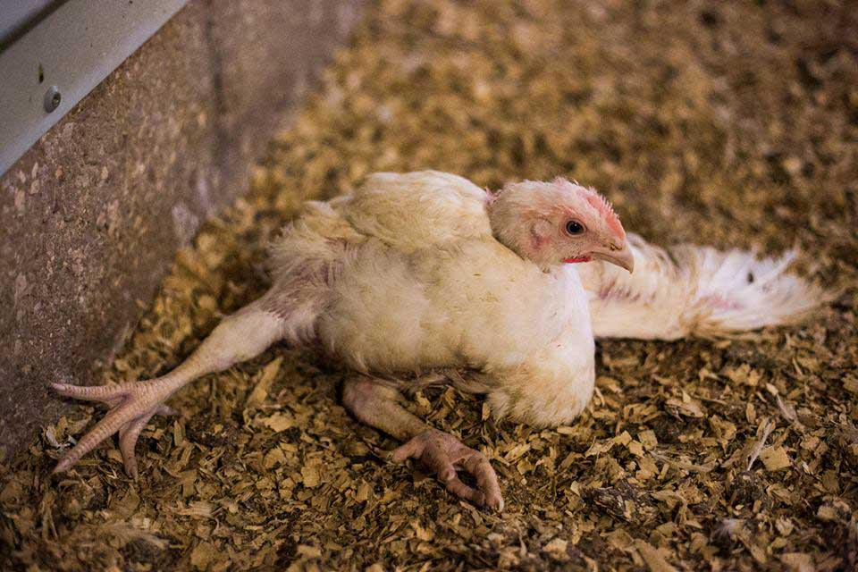

🦠
لماذا هذا الإجراء مهم؟
الكوكسيديا مرض طفيلي قاتل وسريع الانتشار، يضرب أمعاء الدجاج ويسبب
نزيفاً داخلياً.
ملاحظة: يصيب الكوكسيديا الدجاج في عمر شهر حتى أربعة
أشهر، نادرًا يصيب أقل من أسبوع.
الأعراض:
- خمول ونعاس الحيوانات الصغيرة.
- فقدان الشهية وزيادة العطش.
- ظهور صبغة زرقاء بالقرب من العينين.
- ريش منزعج، تقويس القدم.
متى يجب القيام به؟
عند ارتفاع الرطوبة، أو بلل الأرضية، أو برودة الجو المفاجئة.
كيف تنفذه خطوة بخطوة؟
- العزل: اعزل الطيور المصابة فوراً.
-
تجفيف الأرضية: أزل أي جزء طيني أو مبلل واكشط
الطبقة العلوية.
-
العلاج: استخدم "أمبروليوم" أو "تولترازوريل" في
الماء لمدة 5-7 أيام.
-
المراقبة: راقب لون الفضلات للتأكد من توقف النزيف
(اللون الأحمر).
⚠️ ماذا يحدث عند الإهمال؟
- موت عدد كبير من الدجاج في وقت قصير.
- إسهال مدمم يضعف القطيع بالكامل.
- توقف النمو وخسارة الوزن بشكل دائم.

🦠
কেন এটি গুরুত্বপূর্ণ?
কক্সিডিওসিস একটি মারাত্মক এবং দ্রুত ছড়ানো রোগ যা মুরগির অন্ত্রে
রক্তক্ষরণ ঘটায়।
দ্রষ্টব্য: কক্সিডিওসিস সাধারণত এক মাস থেকে চার মাস
বয়সী মুরগিকে আক্রমণ করে, এক সপ্তাহের কম বয়সী বাচ্চার ক্ষেত্রে এটি
বিরল।
লক্ষণসমূহ:
- ছোট মুরগির ঝিমুনি এবং অলসতা।
- ক্ষুধা কমে যাওয়া এবং পিপাসা বেড়ে যাওয়া।
- চোখের কাছে নীলচে আভা দেখা দেওয়া।
- পালক উস্কোখুস্কো হয়ে যাওয়া, কুঁকড়ে থাকা।
কখন করতে হবে?
আদ্রতা বাড়লে, মেঝে ভিজে গেলে, বা হঠাৎ ঠান্ডা পড়লে।
ধাপগুলো কীভাবে করবেন?
-
আলাদা করা: আক্রান্ত মুরগি দ্রুত আলাদা করুন।
-
মাটি শুকানো: কাদা বা ভেজা মাটি সরিয়ে ফেলুন এবং
উপরের স্তর চেঁছে নিন।
-
চিকিৎসা: ৫-৭ দিন পানিতে "অ্যামপ্রোলিয়াম" বা
"টল্ট্রাজুরিল" ব্যবহার করুন।
-
পর্যবেক্ষণ: রক্তক্ষরণ (লাল রঙ) বন্ধ হয়েছে কিনা
তা নিশ্চিত করতে মলের রঙ খেয়াল করুন।
⚠️ অবহেলা করলে কী হয়?
- অল্প সময়ে অনেক মুরগি মারা যেতে পারে।
- রক্তযুক্ত পায়খানা পুরো দলকে দুর্বল করে দেয়।
- বৃদ্ধি বন্ধ হয়ে যায় এবং ওজন কমে যায়।